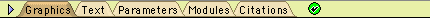

(updated 2005)
(under construction)
MesquiteWindows have a series of alternative panels built in to convey different information to the user. The graphical content area to which components are added using addToWindow is the main panel, and the one the user typically deals with. The user can toggle through the other panels using the Information Bar at the top of the window:

If no information bar is visible, it can be made visible by the Show Information Bar menu item under Windows.
Individual subclasses of MesquiteWindows are responsible for the graphical and text versions of the output; the base class MesquiteWindow supplies the remaining panels.